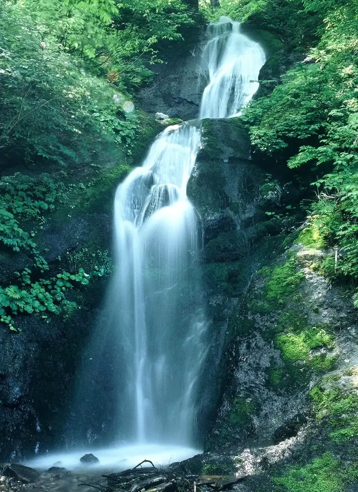
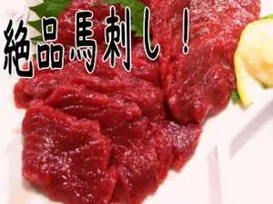
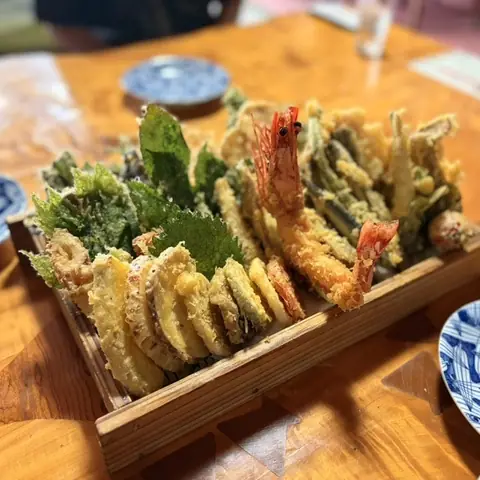
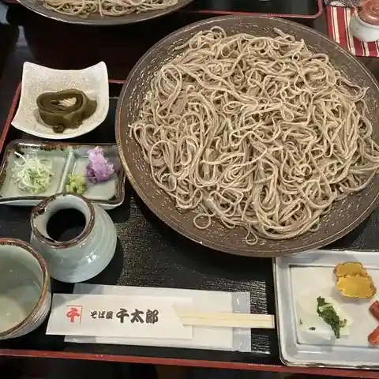
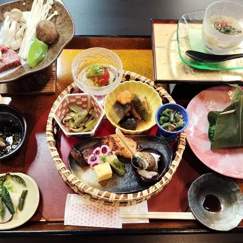
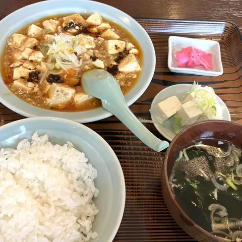
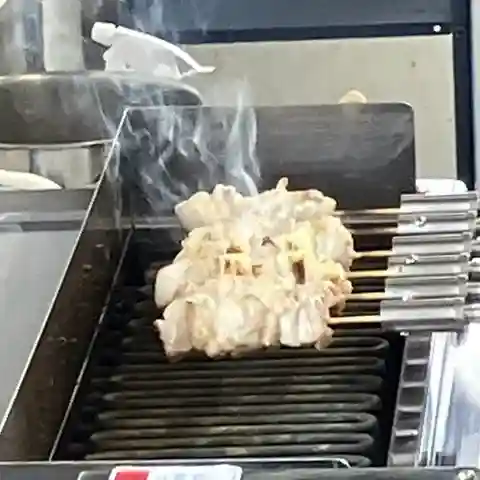
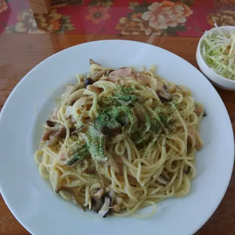
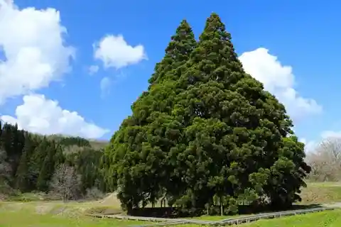
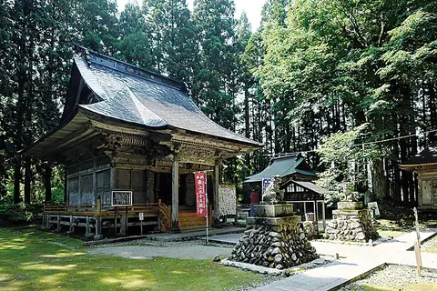

Sakegawa
Sakegawa · Yamagata
Sakegawa
Highlighted on the Yamagata map.

Stay
美神の湯 松葉荘
Bishin No Yu Matsuba Sou
Lodge in Sakegawa, Yamagata.
加登屋旅館

Katou Ya Ryokan
Ryokan inn in Sakegawa, Yamagata.
Dining
そば処 ふくろう

Soba Tokoro Fukurou
Soba restaurant in Sakegawa, Yamagata.
そばや千太郎

Sobaya Sentarou
Soba restaurant in Sakegawa, Yamagata.
松葉荘

Matsuba Sou
Inn restaurant in Sakegawa, Yamagata.
珍来

Chin Rai
Chinese restaurant in Sakegawa, Yamagata.
野崎冷菓店
Nozaki Reika Mise
Japanese sweets café in Sakegawa, Yamagata.
味処 大将
Ajidokoro Taishou
Shokudo diner in Sakegawa, Yamagata.
やきとり・からあげ家 米っこ最上

Yakitori Karaage Ie Kome Kko Saijou
Karaage (fried chicken) shop in Sakegawa, Yamagata.
カフェ きのこの森

Kafe Kinokono Mori
Café in Sakegawa, Yamagata.
Sights
Great Cedar of Kosugi (Totoro Tree)

A great cedar in Sakegawa's Kosugi district, long revered locally as a sacred tree and famous for its resemblance to Totoro from My Neighbor Totoro. It is estimated to be about 1,000 years old.
Niwatsuki Kannon

Temple No. 33, the last of the Mogami 33 Kannon pilgrimage (Tendai sect, Teigetsuzan Gatsuzoin). It traces its origins to the Kannon statue that the lord of Mamuro Castle kept as his guardian Buddha.